Table Dialog¶
Use the Table dialog to create or modify a table.
The Table dialog organizes the development of a table through the following dialog tabs: General, Columns, Constraints, Advanced, Parameter, and Security. The SQL tab displays the SQL code generated by dialog selections.
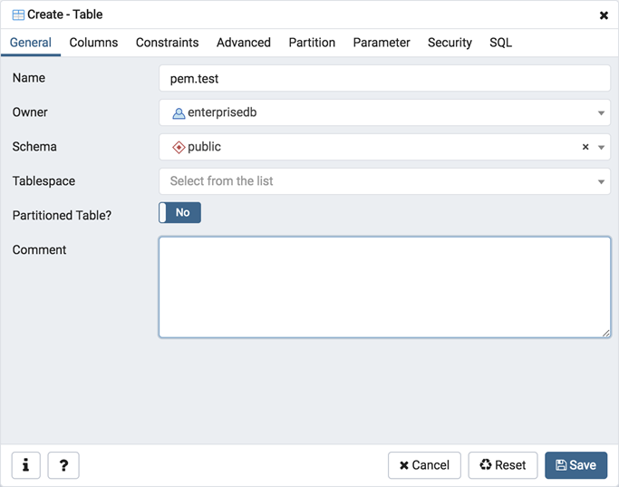Use the fields in the General tab to identify the table:
Use the Name field to add a descriptive name for the table. A table cannot have the same name as any existing table, sequence, index, view, foreign table, or data type in the same schema. The name specified will be displayed in the pgAdmin tree control. This field is required.
Select the owner of the table from the drop-down listbox in the Owner field. By default, the owner of the table is the role that creates the table.
Select the name of the schema in which the table will reside from the drop-down listbox in the Schema field.
Use the drop-down listbox in the Tablespace field to specify the tablespace in which the table will be stored.
Move the Partitioned Table? switch to the Yes in case you want to create a partitioned table. Option is available for PostgreSQL 10 and above.
Store notes about the table in the Comment field.
Click the Columns tab to continue.
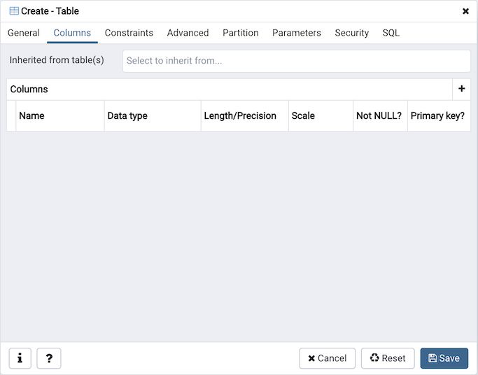Use the drop-down listbox next to Inherited from table(s) to specify any parent table(s); the table will inherit columns from the selected parent table(s). Click inside the Inherited from table(s) field to select a table name from a drop-down list. Repeat to add any other parent tables. Delete a selected table by clicking the x to the left of the parent name. Note that inherited column names and datatypes are not editable in the current dialog; they must be modified at the parent level.
Click the Add icon (+) to specify the names of columns and their datatypes in the Columns table:
Use the Name field to add a descriptive name for the column.
Use the drop-down listbox in the Data type field to select a data type for the column. This can include array specifiers. For more information on the data types supported by PostgreSQL, refer to Chapter 8 of the core documentation.
If enabled, use the Length/Precision and Scale fields to specify the maximum number of significant digits in a numeric value, or the maximum number of characters in a text value.
Move the Not NULL? switch to the Yes position to require a value in the column field.
Move the Primary key? switch to the Yes position to specify the column is the primary key constraint.
Click the Add icon (+) to add additional columns; to discard a column, click the trash icon to the left of the row and confirm deletion in the Delete Row popup.
Click the Constraints tab to continue.
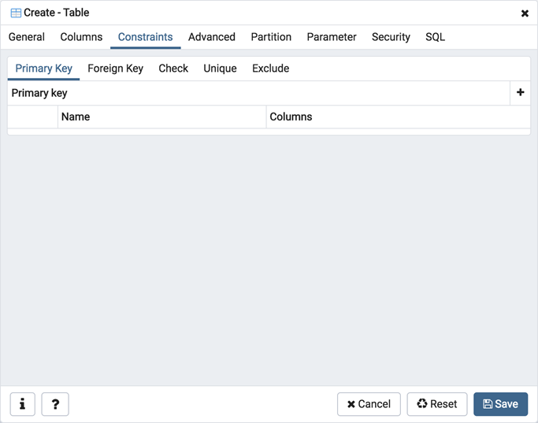Use the fields in the Constraints tab to provide a table or column constraint. Optional constraint clauses specify constraints (tests) that new or updated rows must satisfy for an INSERT or UPDATE operation to succeed. Select the appropriate constraint type by selecting one of the following tabs on the Constraints panel:
Tab Name |
Constraint |
|---|---|
Primary Key |
Provides a unique identifier for each row in the table. |
Foreign Key |
Maintains referential integrity between two tables. |
Check |
Requires data satisfies an expression or condition before insertion or modification. |
Unique |
Ensures that the data contained in a column, or a group of columns, is unique among all the rows in the table. |
Exclude |
Guarantees that if any two rows are compared on the specified column or expression (using the specified operator), at least one of the operator comparisons will return false or null. |
To add a primary key for the table, select the Primary Key tab, and click the Add icon (+). To define the primary key, click the Edit icon to the left of the Trash icon. A dialog similar to the Primary key dialog (accessed by right clicking on Constraints in the pgAdmin tree control) opens.
Use the fields in the General tab to identify the primary key:
Use the Name field to add a descriptive name for the primary key constraint. The name will be displayed in the pgAdmin tree control.
Provide notes about the primary key in the Comment field.
Click the Definition tab to continue.

Use the fields in the Definition tab to define the primary key constraint:
Click inside the Columns field and select one or more column names from the drop-down listbox. To delete a selection, click the x to the left of the column name. The primary key constraint should be different from any unique constraint defined for the same table; the selected column(s) for the constraints must be distinct.
Select the name of the tablespace in which the primary key constraint will reside from the drop-down listbox in the Tablespace field.
Use the Fill Factor field to specify a fill factor for the table and index. The fill factor for a table is a percentage between 10 and 100. 100 (complete packing) is the default.
Move the Deferrable? switch to the Yes position to specify the timing of the constraint is deferrable and can be postponed until the end of the statement. The default is No.
If enabled, move the Deferred? switch to the Yes position to specify the timing of the constraint is deferred to the end of the statement. The default is No.
To add a foreign key constraint, select the Foreign Key tab, and click the Add icon (+). To define the constraint, click the Edit icon to the left of the Trash icon. A dialog similar to the Foreign key dialog (accessed by right clicking on Constraints in the pgAdmin tree control) opens.
Use the fields in the General tab to identify the foreign key constraint:
Use the Name field to add a descriptive name for the foreign key constraint. The name will be displayed in the pgAdmin tree control.
Provide notes about the foreign key in the Comment field.
Click the Definition tab to continue.

Use the fields in the Definition tab to define the foreign key constraint:
Move the Deferrable? switch to the Yes position to specify the timing of the constraint is deferrable and can be postponed until the end of the statement. The default is No.
If enabled, move the Deferred? switch to the Yes position to specify the timing of the constraint is deferred to the end of the statement. The default is No.
Move the Match type switch specify the type of matching that is enforced by the constraint:
Select Full to indicate that all columns of a multicolumn foreign key must be null if any column is null; if all columns are null, the row is not required to have a match in the referenced table.
Select Simple to specify that a single foreign key column may be null; if any column is null, the row is not required to have a match in the referenced table.
Move the Validated switch to the Yes position to instruct the server to validate the existing table content (against a foreign key or check constraint) when you save modifications to this dialog.
Move the Auto FK Index switch to the No position to disable the automatic index feature.
The field next to Covering Index generates the name of an index if the Auto FK Index switch is in the Yes position; or, this field is disabled.
Click the Columns tab to continue.

- Use the fields in the Columns tab to specify one or more reference column(s).
A Foreign Key constraint requires that one or more columns of a table must only contain values that match values in the referenced column(s) of a row of a referenced table:
Use the drop-down listbox next to Local column to specify the column in the current table that will be compared to the foreign table.
Use the drop-down listbox next to References to specify the name of the table in which the comparison column(s) resides.
Use the drop-down listbox next to Referencing to specify a column in the foreign table.
Click the Add icon (+) to add a column to the list; repeat the steps above and click the Add icon (+) to add additional columns. To discard an entry, click the trash icon to the left of the entry and confirm deletion in the Delete Row popup.
Click the Action tab to continue.

Use the drop-down listboxes on the Action tab to specify behavior related to the foreign key constraint that will be performed when data within the table is updated or deleted:
Use the drop-down listbox next to On update to select an action that will be performed when data in the table is updated.
Use the drop-down listbox next to On delete to select an action that will be performed when data in the table is deleted.
The supported actions are:
NO ACTION |
Produce an error indicating that the deletion or update will create a foreign key constraint violation. If the constraint is deferred, this error will be produced at constraint check time if any referencing rows still exist. This is the default. |
RESTRICT |
Throw an error indicating that the deletion or update would create a foreign key constraint violation. This is the same as NO ACTION except that the check is not deferrable. |
CASCADE |
Delete any rows referencing the deleted row, or update the values of the referencing column(s) to the new values of the referenced columns, respectively. |
SET NULL |
Set the referencing column(s) to null. |
SET DEFAULT |
Set the referencing column(s) to their default values. There must be a row in the referenced table that matches the default values (if they are not null), or the operation will fail. |
To add a check constraint, select the Check tab on the panel, and click the Add icon (+). To define the check constraint, click the Edit icon to the left of the Trash icon. A dialog similar to the Check dialog (accessed by right clicking on Constraints in the pgAdmin tree control) opens.
Use the fields in the General tab to identify the check constraint:
Use the Name field to add a descriptive name for the check constraint. The name will be displayed in the pgAdmin tree control. With PostgreSQL 9.5 forward, when a table has multiple check constraints, they will be tested for each row in alphabetical order by name and after NOT NULL constraints.
Provide notes about the check constraint in the Comment field.
Click the Definition tab to continue.

Use the fields in the Definition tab to define the check constraint:
Provide the expression that a row must satisfy in the Check field. This field is required.
Move the No Inherit? switch to the Yes position to specify that this constraint is not automatically inherited by a table’s children. The default is No, meaning that the constraint will be inherited by any children.
Move the Don’t validate? switch to the No position to skip validation of existing data; the constraint may not hold for all rows in the table. The default is Yes.
To add a unique constraint, select the Unique tab on the panel, and click the Add icon (+). To define the constraint, click the Edit icon to the left of the Trash icon. A dialog similar to the Unique constraint dialog (accessed by right clicking on Constraints in the pgAdmin tree control) opens.
Use the fields in the General tab to identify the unique constraint:
Use the Name field to add a descriptive name for the unique constraint. The name will be displayed in the pgAdmin tree control.
Provide notes about the unique constraint in the Comment field.
Click the Definition tab to continue.
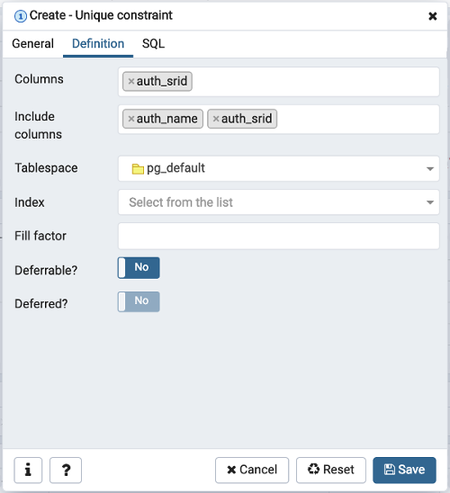Use the fields in the Definition tab to define the unique constraint:
Click inside the Columns field and select one or more column names from the drop-down listbox. To delete a selection, click the x to the left of the column name. The unique constraint should be different from the primary key constraint defined for the same table; the selected column(s) for the constraints must be distinct.
Select the name of the tablespace in which the unique constraint will reside from the drop-down listbox in the Tablespace field.
Use the Fill Factor field to specify a fill factor for the table and index. The fill factor for a table is a percentage between 10 and 100. 100 (complete packing) is the default.
Move the Deferrable? switch to the Yes position to specify the timing of the constraint is deferrable and can be postponed until the end of the statement. The default is No.
If enabled, move the Deferred? switch to the Yes position to specify the timing of the constraint is deferred to the end of the statement. The default is No.
To add an exclusion constraint, select the Exclude tab on the panel, and click the Add icon (+). To define the constraint, click the Edit icon to the left of the Trash icon. A dialog similar to the Exclusion constraint dialog (accessed by right clicking on Constraints in the pgAdmin tree control) opens.
Use the fields in the General tab to identify the exclusion constraint:
Use the Name field to provide a descriptive name for the exclusion constraint. The name will be displayed in the pgAdmin tree control.
Provide notes about the exclusion constraint in the Comment field.
Click the Definition tab to continue.
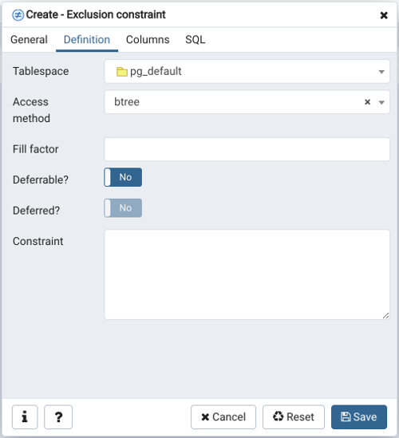Use the fields in the Definition tab to define the exclusion constraint:
Use the drop-down listbox next to Tablespace to select the tablespace in which the index associated with the exclude constraint will reside.
Use the drop-down listbox next to Access method to specify the type of index that will be used when implementing the exclusion constraint:
Select gist to specify a GiST index (the default).
Select spgist to specify a space-partitioned GiST index.
Select btree to specify a B-tree index.
Select hash to specify a hash index.
Use the Fill Factor field to specify a fill factor for the table and associated index. The fill factor is a percentage between 10 and 100. 100 (complete packing) is the default.
Move the Deferrable? switch to the Yes position to specify that the timing of the constraint is deferrable, and can be postponed until the end of the statement. The default is No.
If enabled, move the Deferred? switch to the Yes position to specify the timing of the constraint is deferred to the end of the statement. The default is No.
Use the Constraint field to provide a condition that a row must satisfy to be included in the table.
Click the Columns tab to continue.
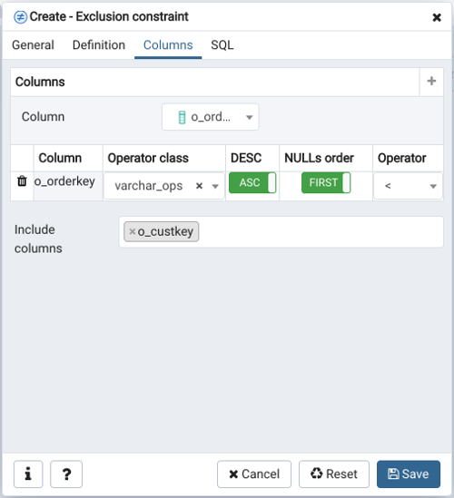Use the fields in the Columns tab to to specify the column(s) to which the constraint applies. Use the drop-down listbox next to Column to select a column and click the Add icon (+) to provide details of the action on the column:
The Column field is populated with the selection made in the Column drop-down listbox.
If applicable, use the drop-down listbox in the Operator class to specify the operator class that will be used by the index for the column.
Move the DESC switch to DESC to specify a descending sort order. The default is ASC which specifies an ascending sort order.
Move the NULLs order switch to LAST to define an ascending sort order for NULLs. The default is FIRST which specifies a descending order.
Use the drop-down list next to Operator to specify a comparison or conditional operator.
Click the Advanced tab to continue.
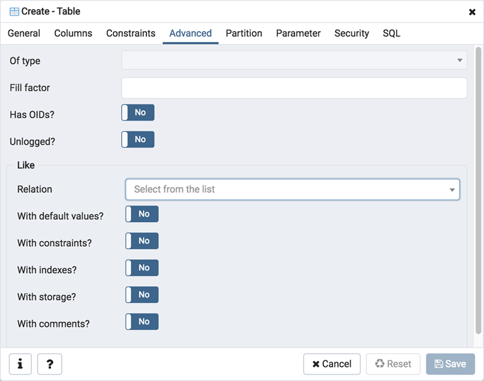Use the fields in the Advanced tab to define advanced features for the table:
Use the drop-down listbox next to Of type to copy the table structure from the specified composite type. Please note that a typed table will be dropped if the type is dropped (with DROP TYPE … CASCADE).
Use the Fill Factor field to specify a fill factor for the table. The fill factor for a table is a percentage between 10 and 100. 100 (complete packing) is the default.
Move the Has OIDs? switch to the Yes position to specify that each row within a table has a system-assigned object identifier. The default is No.
Move the Unlogged? switch to the Yes position to disable logging for the table. Data written to an unlogged table is not written to the write-ahead log. Any indexes created on an unlogged table are automatically unlogged as well. The default is No.
Use the fields in the Like box to specify which attributes of an existing table from which a table will automatically copy column names, data types, and not-null constraints; after saving the new or modified table, any changes to the original table will not be applied to the new table.
Use the drop-down listbox next to Relation to select a reference table.
Move the With default values? switch to the Yes position to copy default values.
Move the With constraints? switch to the Yes position to copy table and column constraints.
Move the With indexes? switch to the Yes position to copy indexes.
Move the With storage? switch to the Yes position to copy storage settings.
Move the With comments? switch to the Yes position to copy comments.
With PostgreSQL 10 forward, the Partition tab will be visible.
Click the Partition tab to continue.
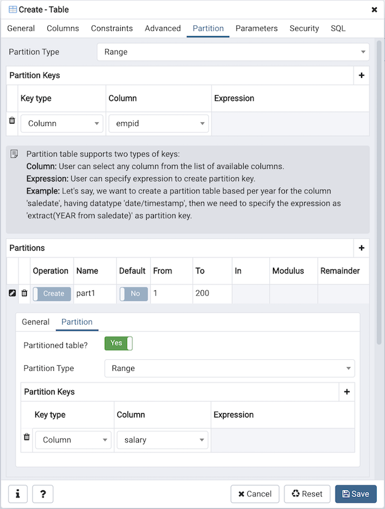Use the fields in the partition tab to create the partitions for the table:
Select a partition type from the Partition Type selection box. There are 3 options available; Range, List and Hash. Hash option will only enable for PostgreSQL version >= 11.
Use the Partition Keys panel to define the partition keys. Click the Add icon (+) to add each partition keys selection:
Select a partition key type in the Keytype field.
Select a partition column in the Column field if Column option selected for Keytype field .
Specify the expression in the Expression field if Expression option selected for the Keytype field.
Use the Partitions panel to define the partitions of a table. Click the Add icon (+) to add each partition:
Move the Operation switch to attach to attach the partition, by default it is create.
Use the Name field to add the name of the partition.
If partition type is Range or List then Default field will be enabled.
If partition type is Range then From and To fields will be enabled.
If partition type is List then In field will be enabled.
If partition type is Hash then Modulus and Remainder fields will be enabled.
Users can create a partition and define them as a partitioned table. Click the Edit icon to expand the properties of a partition. Use the Partition tab to create that partition as a partitioned table.
Move the Partitioned Table? switch to the Yes in case you want to create a partitioned table.
Select a partition type from the Partition Type selection box.
Use the Partition Keys panel to define the partition keys.
View of multi level Partitioned Table in browser tree:
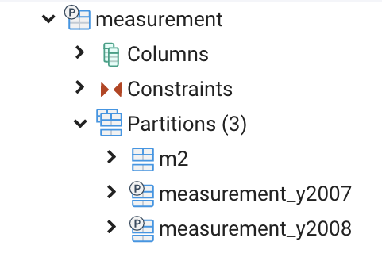Click the Parameter tab to continue.
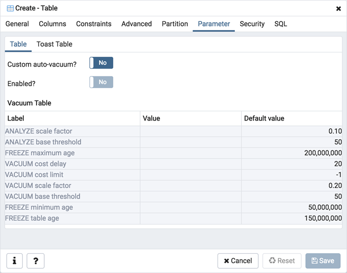Use the tabs nested inside the Parameter tab to specify VACUUM and ANALYZE thresholds; use the Table tab and the Toast Table tab to customize values for the table and the associated toast table:
Move the Custom auto-vacuum? switch to the Yes position to perform custom maintenance on the table.
Move the Enabled? switch to the Yes position to select values in the Vacuum table. The Vacuum Table provides default values for maintenance operations.
Provide a custom value in the Value column for each metric listed in the Label column.
Click the Security tab to continue.
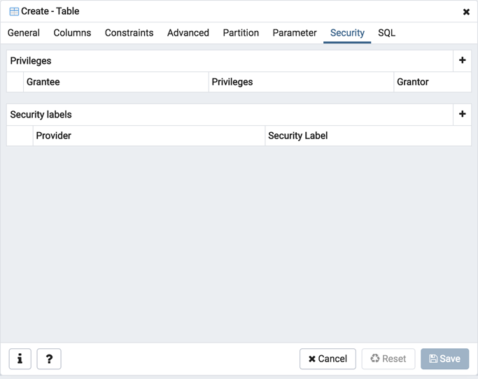Use the Security tab to assign privileges and define security labels.
Use the Privileges panel to assign privileges to a role. Click the Add icon (+) to set privileges for database objects:
Select the name of the role from the drop-down listbox in the Grantee field.
Click inside the Privileges field. Check the boxes to the left of one or more privileges to grant the selected privilege to the specified user.
The current user, who is the default grantor for granting the privilege, is displayed in the Grantor field.
Click the Add icon (+) to assign additional privileges; to discard a privilege, click the trash icon to the left of the row and confirm deletion in the Delete Row popup.
Use the Security Labels panel to define security labels applied to the function. Click the Add icon (+) to add each security label selection:
Specify a security label provider in the Provider field. The named provider must be loaded and must consent to the proposed labeling operation.
Specify a a security label in the Security Label field. The meaning of a given label is at the discretion of the label provider. PostgreSQL places no restrictions on whether or how a label provider must interpret security labels; it merely provides a mechanism for storing them.
Click the Add icon (+) to assign additional security labels; to discard a security label, click the trash icon to the left of the row and confirm deletion in the Delete Row popup.
Click the SQL tab to continue.
Your entries in the Table dialog generate a SQL command (see an example below). Use the SQL tab for review; revisit or switch tabs to make any changes to the SQL command.
Example¶
The following is an example of the sql command generated by user selections in the Table dialog:
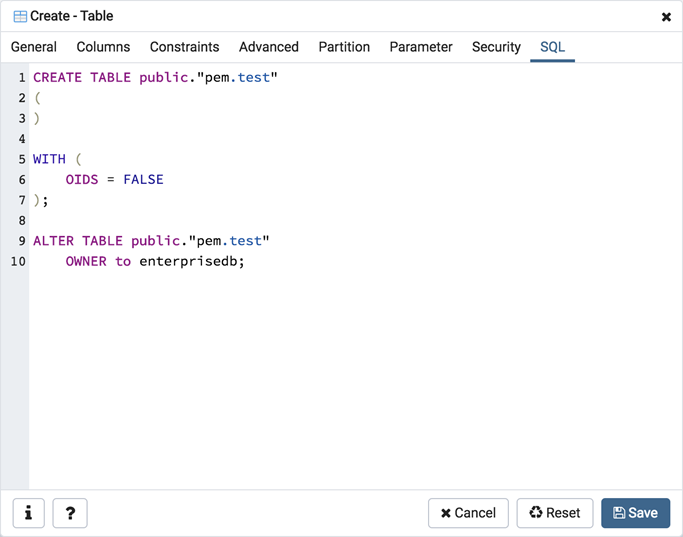The example shown demonstrates creating a table named product_category. It has three columns and a primary key constraint on the category_id column.
Click the Info button (i) to access online help.
Click the Save button to save work.
Click the Cancel button to exit without saving work.
Click the Reset button to restore configuration parameters.